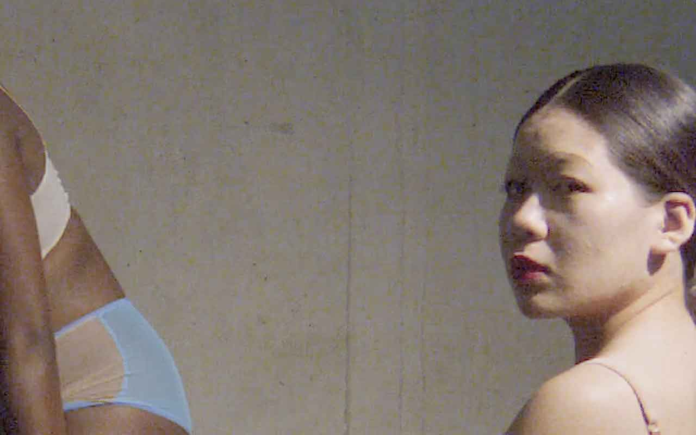
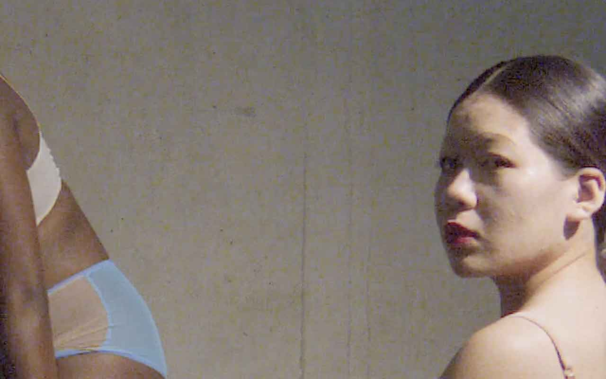

About
ORGAN is a London-based multidisciplinary studio working in the field of creative direction, photography and graphic design, and the joint practice of Norman Wilcox-Geissen and Maja Larsson. The studio functions as a site where creative relationships are forged through fluid and ongoing collaborations. Projects are conceived, developed and realised through a research-led practice incorporating innovative techniques, materials and forms of production for print and digital platforms.
Contact
ORGAN 2 Abney Gardens London N16 7HE U.K
Telephone +44 (0)20 7241 4346
Email studio@or-gan.com
Follow @organstudio on Instagram
Site build by Nathalie Jonsson Video sound by Mark Harwood and Timo van Luijk